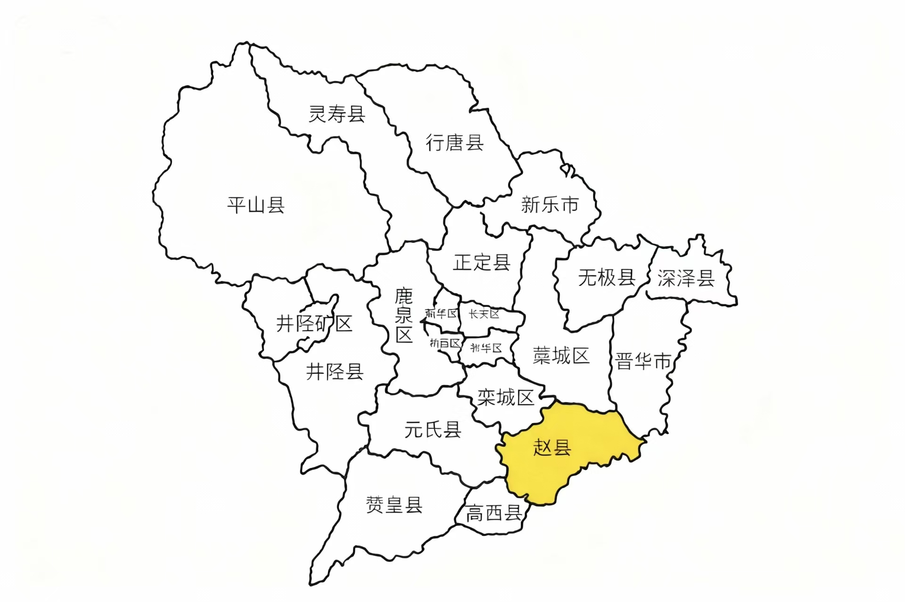

赵州（赵县）文化详解
千年古郡 · 文化瑰宝

赵州，现称赵县，隶属河北省石家庄市，位于华北平原腹地，是一座拥有2500多年历史的文化古县。作为古赵州治所，这里沉淀了深厚的历史文化底蕴，尤以"一桥、一寺、一鼓、一果"闻名中外。
赵州桥（安济桥）是世界现存最古老的单孔敞肩石拱桥，由隋代工匠李春设计建造，距今已有1400余年历史。其"敞肩拱"结构被誉为"世界桥梁史上的奇迹"，被列入世界文化遗产名录。
柏林禅寺始建于东汉末年，是中国北方重要的佛教禅宗祖庭，历经千年沧桑仍香火鼎盛。寺内的万佛楼、柏林塔等建筑见证了佛教在华北地区的传播与发展。
赵州扇鼓是当地特有的民间艺术形式，起源于明清时期，融合了舞蹈、音乐、说唱等元素，多用于祭祀、庆典等场合，现已被列入河北省非物质文化遗产名录。
作为"中国雪花梨之乡"，赵州雪梨种植历史超过2000年，其果肉洁白如玉、汁多味甜，明清时期曾作为贡品进献宫廷。每年春季，数十万亩梨花盛开，形成"香雪海"奇观，吸引八方游客。
此外，赵州还保留有陀罗尼经幢（全国现存最高的古经幢）、永通桥（赵州二桥）等重要文物古迹，构成了完整的历史文化体系，是研究华北地区古代政治、经济、文化的重要实物载体。